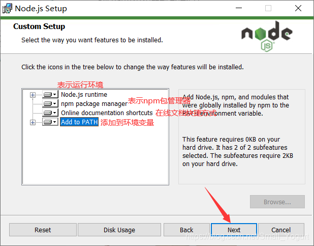
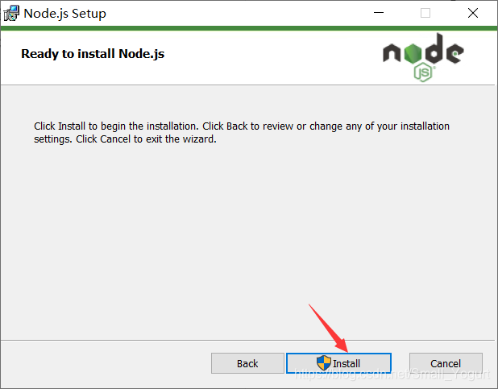
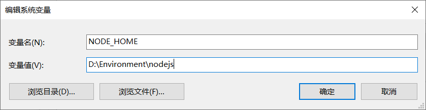
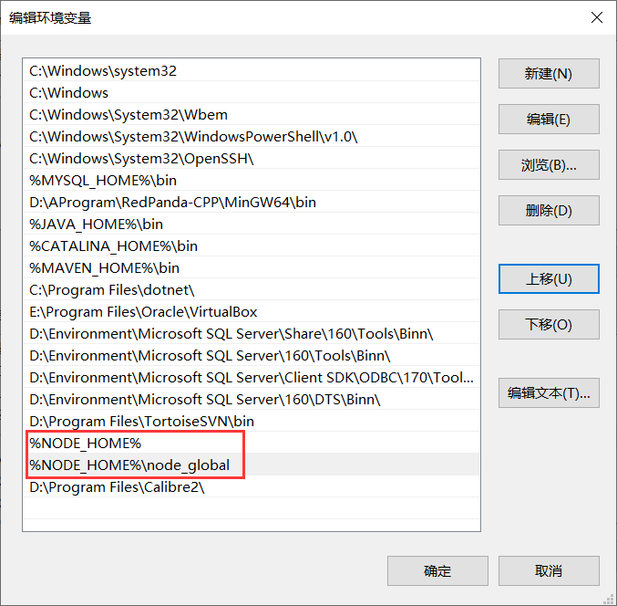
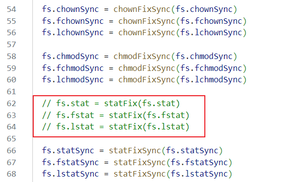
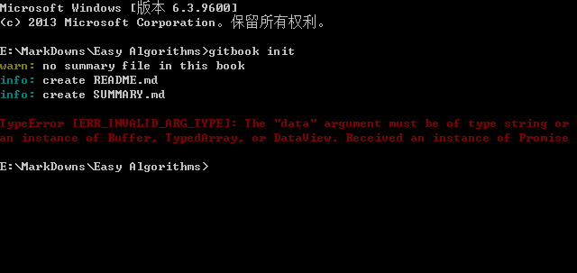

1. Node.js安装(Windows)
要使用 GitBook 我们得先安装它的命令行工具 gitbook-cli。而安装 gitbook-cli 得先安装 Node.js。
进入Node.js官网下载安装包并运行（根据自己电脑选择32位还是64位）。

选择安装路径，然后点击下一步

这里四项全部安装，点击下一步

这里不用打勾✔，下一步

选择Install安装，等安装完成即可

进入命令提示符窗口，分别输入以下命令，显示版本号，则安装成功
node -v # 显示安装的nodejs版本
npm -v # 显示安装的npm版本
2. 修改全局模块路径和缓存路径（可选）
当我们在执行npm install express -g命令时，g表示global全局。会默认下载到c盘，它的默认路径为：【C:\Users\用户名\AppData\Roaming\npm】。
在Node.js安装目录下创建两个文件夹，node_global和node_cache

设置node_global和node_cache权限

win+R打开运行窗口，输入cmd，再执行以下两条指令
npm config set prefix "node_global文件夹所在路径"
npm config set cache "node_cache文件夹所在路径"
执行完毕后，再配置环境变量
右键此电脑——>高级系统设置——>环境变量
在系统变量中，新建，变量名：
NODE_HOME变量值：Node.js安装路径
在系统变量的Path中将原来Node.js路径修改为
%NODE_HOME%，并添加%NODE_HOME%\node_global
设置淘宝镜像
通过npm命令行工具设置全局镜像地址，可以持久保存在用户的npm配置中：
npm config set registry https://registry.npmmirror.com/
请注意，淘宝npm镜像原地址 https://registry.npm.taobao.org 在2022年6月30日后已不再可用，因此应使用新地址 https://registry.npmmirror.com/。
3. 安装GitBook
打开cmd，执行gitbook-cli安装命令
npm install gitbook-cli -g
安装完成后，执行gitbook -V查看 gitbook-cli 版本号并安装 gitbook 本体。
[!Tip]
使用12.5.0以上的版本（只测试了12.4.1没问题，但网上有用12.8.3的报错的）才会有下面的报错，所以推荐使用10+至12.4.1的版本，10以下也会有问题。
不出意料，它报了一个错：

找到错误中那个 polyfills.js 文件的位置，即上图中画横线的部分。然后打开它，注释掉以下内容：

保存，重新 gitbook -V，应该就能安装成功了。
4. GitBook初始化错误
找到一个空文件夹，在该目录下打开cmd，执行gitbook init初始化一个书籍项目。
不出意外，它又报错了：

打开"C:\Users\用户名.gitbook\versions\3.2.3\lib\init.js"这个文件
将第 72 行的 return fs.writeFile(filePath, summary.toText(extension));修改为：
return summary.toText(extension).then(stx=>{return fs.writeFile(filePath, stx);});
保存，重新 gitbook init，就可以了。
这时我们会发现出现了两个文件：README.md 与 SUMMARY.md。README.md 是用来写简介的，SUMMARY.md 是用来写目录的。